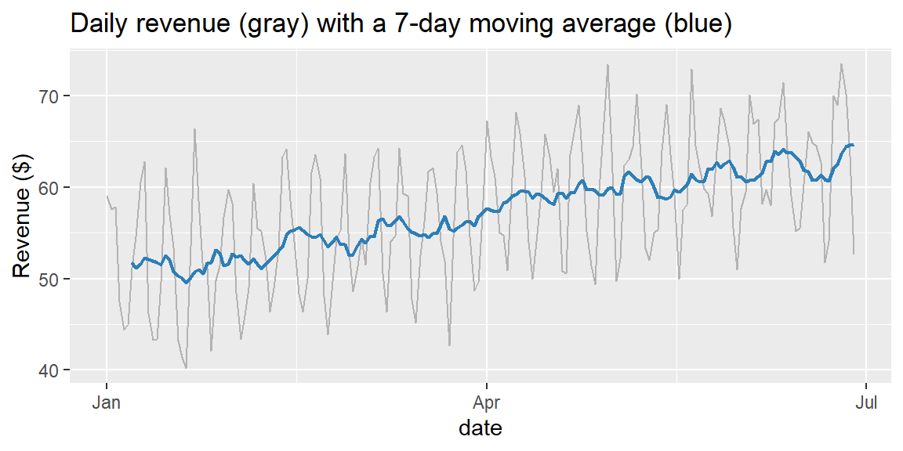

30Week 12: Moving Averages and Exponential Smoothing
30.1 Why This Matters
The naive and seasonal naive forecasts from Chapter 29 use exactly one past observation, either the most recent value or the value from one seasonal cycle ago. That’s a deliberately low bar. Real series contain genuine noise layered on top of a signal, and using more of the past, combined sensibly, can produce a smoother, more reliable forecast than leaning on any single point. This section covers two classic families that do exactly that: moving averages, which average a fixed window of recent values, and exponential smoothing, which uses the entire history but lets recent observations count more than old ones.
30.2 Moving Averages
A moving average of order \(k\) at time \(t\) is the average of the \(k\) most recent observations: \[
\text{MA}_k(t) = \frac{y_t + y_{t-1} + \cdots + y_{t-k+1}}{k}
\] This trailing average serves two purposes: smoothing a noisy series to reveal its underlying trend, and, taken at the most recent time point, serving directly as a forecast for the next period.
ExampleExample 12.7: A 7-day moving average
library(tidyverse)library(fpp3)library(slider)coffee <-read_csv("data/coffee_shop_daily.csv") |>as_tsibble(index = date)coffee <- coffee |>mutate(ma7 =slide_dbl(revenue, mean, .before =6, .complete =TRUE))ggplot(coffee, aes(x = date)) +geom_line(aes(y = revenue), color ="gray70") +geom_line(aes(y = ma7), color ="#2c7fb8", linewidth =0.8) +labs(title ="Daily revenue (gray) with a 7-day moving average (blue)", y ="Revenue ($)")

Averaging over a full 7-day window cancels out the weekly seasonal swing entirely (each window contains exactly one of every day of the week), leaving a smooth line that traces the underlying trend almost as cleanly as the STL trend component from Chapter 29.
ExampleExample 12.8: Forecasting with a moving average
mean(tail(coffee$revenue, 7))
[1] 64.68571
The 7-day moving average forecast for June 29 is about $64.69, the average of the last full week. Compare this to Chapter 29’s naive ($52.60) and seasonal naive ($54.10) forecasts: the moving average smooths out day-to-day noise, but by averaging across an entire week, it also blurs away the fact that June 29 is specifically a Saturday, a lower-revenue day. All three methods have a real weakness; the rest of this section builds toward something that addresses both trend and seasonality at once.
NoteChoosing the window length k
A larger \(k\) produces a smoother average that reacts slowly to real changes; a smaller \(k\) is more responsive but noisier. There’s no universally correct choice, it depends on how quickly the underlying pattern actually changes and how much noise needs averaging out. A centered moving average (using both past and future values) is excellent for smoothing a historical series to visualize its trend, exactly what classical decomposition methods do internally, but it can’t be used for genuine forecasting, since “future” values aren’t available yet for the period being predicted. Forecasting always uses a trailing window, like Examples 12.7 and 12.8.
30.3 Exponential Smoothing
Moving averages have a blunt feature: every observation inside the window counts equally, and every observation outside it counts for nothing. Exponential smoothing replaces that hard cutoff with a smooth one, every past observation contributes to the forecast, but recent observations count more, with weights that decay exponentially the further back in time you go.
The simplest version, simple exponential smoothing (SES), updates a single estimated level\(L_t\) each period: \[
L_t = \alpha y_t + (1-\alpha) L_{t-1}
\] where \(\alpha\) (between 0 and 1) is the smoothing parameter. A large \(\alpha\) weights recent observations heavily (a responsive, less-smoothed forecast); a small \(\alpha\) weights the past more evenly (a smoother, slower-to-react forecast). The forecast for every future period is simply the current level, \(\hat{y}_{T+h} = L_T\), a flat line.
ImportantSES alone can’t handle trend or seasonality
Because SES forecasts a flat line forever, it’s only appropriate for a series with no trend and no seasonality, just a level that drifts randomly. The coffee shop data has both a clear trend and clear weekly seasonality (Chapter 29), so plain SES is the wrong tool here; it would flatten out both real patterns. This is exactly why exponential smoothing extends further, covered next.
30.4 Extending Exponential Smoothing: Trend and Season
Holt’s linear trend method adds a second smoothed component, a trend \(b_t\), updated alongside the level with its own smoothing parameter \(\beta\), so forecasts can slope upward or downward rather than staying flat. Holt-Winters’ method adds a third smoothed component, a seasonal pattern \(S_t\), with its own smoothing parameter \(\gamma\), repeating every \(m\) periods. All three, SES, Holt’s, and Holt-Winters, are special cases of the same underlying idea, and fable’s ETS() function (Error, Trend, Season) fits any of them the same way NAIVE() and SNAIVE() were fit in Chapter 29.
ExampleExample 12.9: Fitting the whole family and comparing fit
# A tibble: 3 × 2
.model AICc
<chr> <dbl>
1 ses 1612.
2 holt 1622.
3 hw 1365.
Just as adjusted \(R^2\) penalized unnecessary predictors in Chapter 23, AICc (a penalized measure of fit; lower is better) lets these models be compared fairly. SES and Holt’s method fit about equally poorly (AICc around 1612 and 1622); adding a trend without addressing the obvious weekly seasonality barely helps. Holt-Winters, which models the season explicitly, fits dramatically better (AICc about 1365). Letting fable choose automatically confirms this isn’t a biased choice:
coffee |>model(auto =ETS(revenue))
# A mable: 1 x 1
auto
<model>
1 <ETS(A,A,A)>
ETS() with no formula independently selects ETS(A,A,A), exactly Holt-Winters, the same model already singled out above.
ExampleExample 12.10: What Holt-Winters actually estimated
The fitted smoothing parameters are all quite small: \(\alpha\approx0.041\), \(\beta\approx0.0001\), \(\gamma\approx0.0001\). In plain language: the estimated level updates slowly, drawing on a lot of accumulated history rather than swinging with any single day’s actual revenue; and both the trend and the weekly seasonal pattern are estimated as very stable over time, barely needing to be revised as new data arrives, consistent with the clean, consistent weekly rhythm already seen in Example 12.3’s season plot.
30.5 Forecasting with Holt-Winters
ExampleExample 12.11: A Holt-Winters forecast for June 29
fc_hw <- fit |>select(hw) |>forecast(h ="1 day")fc_hw |>hilo(level =95)
# A tsibble: 1 x 5 [1D]
# Key: .model [1]
.model date
<chr> <date>
1 hw 2024-06-29
# ℹ 3 more variables: revenue <dist>, .mean <dbl>, `95%` <hilo>
Holt-Winters forecasts about $58.00 for Saturday, June 29, with a 95% interval of roughly \((\$51.80, \$64.30)\). Unlike the moving average’s $64.69 (which ignored that Saturday is a lower-revenue day) or the naive forecast’s $52.60 (which ignored the trend entirely), this forecast reflects both the rising trend and the Saturday-specific seasonal adjustment, estimated jointly from the whole series rather than borrowed from a single past point.
30.6 Does the More Sophisticated Model Actually Win?
Chapter 29 insisted that any fancier method has to earn its keep against the naive baselines. Following Chapter 26’s train/test logic, hold out the last two weeks and check.
ExampleExample 12.12: An honest accuracy comparison
Both seasonal naive and Holt-Winters crush plain naive (MAPE around 5.6%, versus about 12.9% for naive), confirming again how much the weekly seasonal pattern matters here. But notice that Holt-Winters (RMSE 3.77) and seasonal naive (RMSE 3.92) perform almost identically, seasonal naive isn’t meaningfully worse, despite requiring no fitting at all.
TipWhy doesn’t Holt-Winters win by more?
Recall Example 12.10’s near-zero \(\gamma\): the fitted model itself concluded that the weekly seasonal pattern barely changes over time. If the seasonal pattern really is that stable, a method that simply repeats “the same day last week” (seasonal naive) is almost doing what Holt-Winters does, estimating a stable seasonal pattern and applying it forward, just without formally estimating trend or smoothing across multiple cycles. This is a genuinely useful, honest finding, not every business series rewards a more sophisticated model with a dramatically better forecast, and checking, as done here, is the only way to know rather than assume.
30.7 Computing Moving Averages and Exponential Smoothing in R and Excel
ExampleExample 12.13: In R and Excel
In R, slider::slide_dbl() computes a moving average, and fable::ETS() fits the entire exponential smoothing family, both shown above.
In Excel, the Data Analysis ToolPak’s Moving Average tool computes a trailing moving average directly from an interval you specify. Its Exponential Smoothing tool fits simple exponential smoothing (SES) only, given a damping factor (\(1-\alpha\)); Excel has no built-in tool for Holt’s method or Holt-Winters. If your series has a trend or seasonality, as this one does, fit those models in R and report the results, even if the rest of your work is done in Excel.
30.8 Recap
Keyword
Definition
Moving average (order \(k\))
The average of the \(k\) most recent observations; smooths a series and can serve as a simple forecast.
Trailing vs. centered moving average
A trailing average uses only past values (usable for forecasting); a centered average uses past and future values (usable only for smoothing a historical series).
Simple exponential smoothing (SES)
\(L_t=\alpha y_t+(1-\alpha)L_{t-1}\); forecasts a flat line; appropriate only when there’s no trend or seasonality.
Smoothing parameter (\(\alpha\))
Controls responsiveness (large \(\alpha\)) vs. smoothness (small \(\alpha\)) in exponential smoothing.
Holt’s linear trend method
Exponential smoothing extended with a smoothed trend component; ETS(... + trend("A") + season("N")).
Holt-Winters method
Exponential smoothing extended with both trend and a smoothed seasonal component; ETS(... + trend("A") + season("A")).
AICc
A penalized fit measure for comparing models; lower is better, plays the same role here that adjusted \(R^2\) played in Chapter 23.
30.9 Check Your Understanding
NoteProblems
A series has \(y_{96}=210\), \(y_{97}=225\), \(y_{98}=198\), \(y_{99}=240\), \(y_{100}=232\). Compute the 5-day moving average forecast for period 101.
Explain why a centered moving average cannot be used to forecast a future period, even though it’s an excellent tool for visualizing a historical trend.
A company fits SES to a series with \(\alpha=0.85\). Is this model going to react quickly or slowly to a sudden, real shift in the series’ level? Explain, referencing the smoothing formula.
A retailer fits SES, Holt’s method, and Holt-Winters to the same weekly sales series and finds AICc values of 812, 809, and 760, respectively. Which model should the retailer prefer, and what does the pattern across all three models suggest about this series?
In Example 12.12, seasonal naive and Holt-Winters produced nearly identical forecast accuracy. Does this mean Holt-Winters was a waste of effort to fit? Explain using the fitted \(\gamma\) from Example 12.10.
TipSolutions
\(\text{MA}_5 = (210+225+198+240+232)/5 = 1105/5 = 221\). The forecast for period 101 is 221.
A centered moving average at time \(t\) requires observations both before and after\(t\) (for example, a 7-day centered average needs 3 days before and 3 days after). For a future period, those “after” observations don’t exist yet, so a centered average can’t be computed for it. A trailing average, using only past values, is the version usable for genuine forecasting.
Quickly. In \(L_t=\alpha y_t+(1-\alpha)L_{t-1}\), a large \(\alpha=0.85\) puts 85% of the weight on the most recent observation and only 15% on the previously smoothed level, so a sudden shift in \(y_t\) is reflected almost immediately in the updated level, and therefore in the next forecast.
The retailer should prefer Holt-Winters (AICc 760), the lowest value indicates the best penalized fit among the three. The pattern, fit improving noticeably at each step (SES to Holt’s to Holt-Winters), suggests this sales series has both a real trend and real seasonality; a model lacking either component fits distinctly worse.
No, it doesn’t mean fitting Holt-Winters was wasted effort, it means checking confirmed that a much simpler method (seasonal naive) already captured most of the available signal, itself a valuable and non-obvious finding. Example 12.10’s near-zero fitted \(\gamma\) shows why: Holt-Winters itself concluded the seasonal pattern barely changes over time, so a method that just repeats last week’s same-day value is bound to perform similarly. Fitting Holt-Winters was what revealed this, without doing so, there would be no way to know whether the more sophisticated model was actually adding value or not.